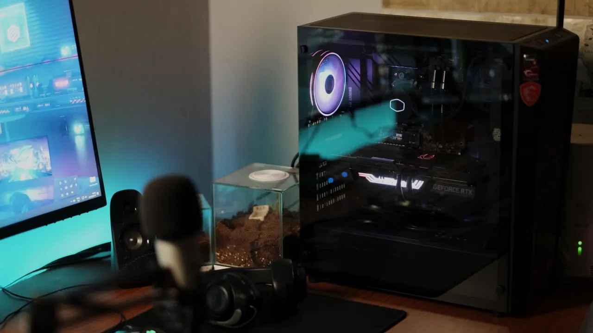

PC SUPPORT / STREAMING SUPPORT
YOUR IDEAS.
ON AIR.
Capture, audio, encoder and OBS troubleshooting for a streaming setup that works together.

YOUR NEXT MOVE / VOLTTECH01 / WHAT’S HOLDING YOU BACK?
Start with
the symptom.
Choose the closest match. We’ll carry it into your enquiry.
02 / A CLEAR PATH FORWARD
Find it. Fix it.
Get back to it.
01
Tell us what changed.
Share the symptoms, your PC details and what you have already tried.
02
Confirm the next step.
VoltTech confirms the assessment, scope and pricing before you proceed.
03
Keep it clear.
Get an explained recommendation rather than a blind replacement.
03 / LET’S MOVE FORWARD
Bring us
the problem.
Tell us about your setup.
Based in Wonderboom, Pretoria. Availability, assessment and costs are confirmed with VoltTech.